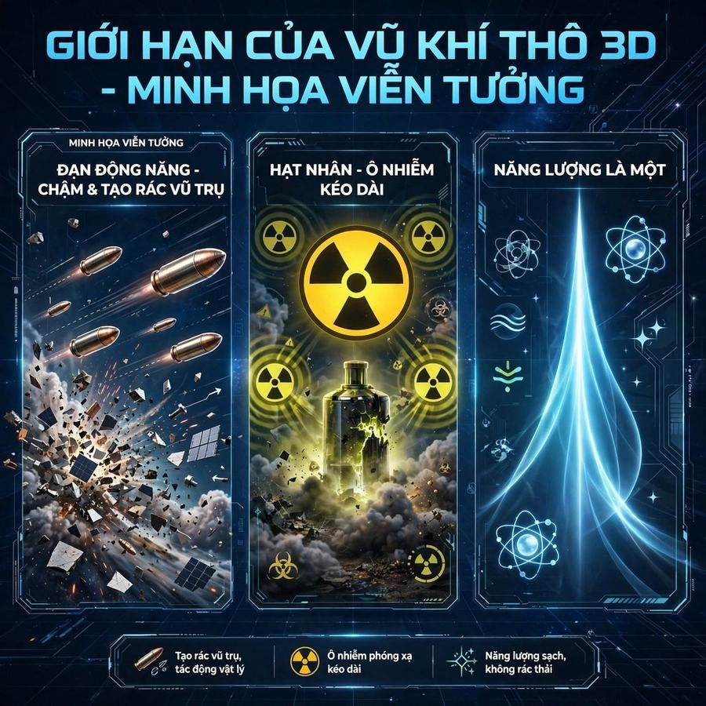
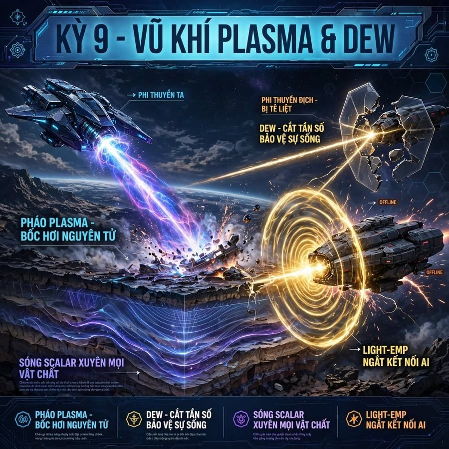
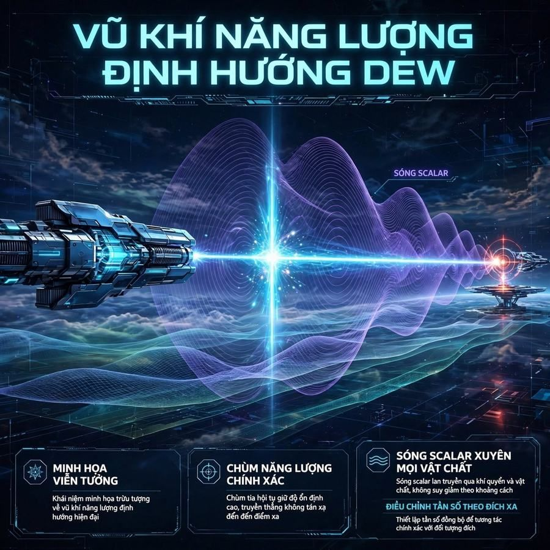
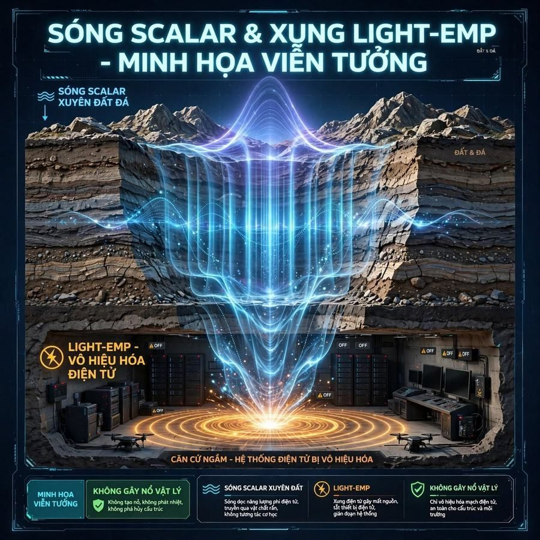
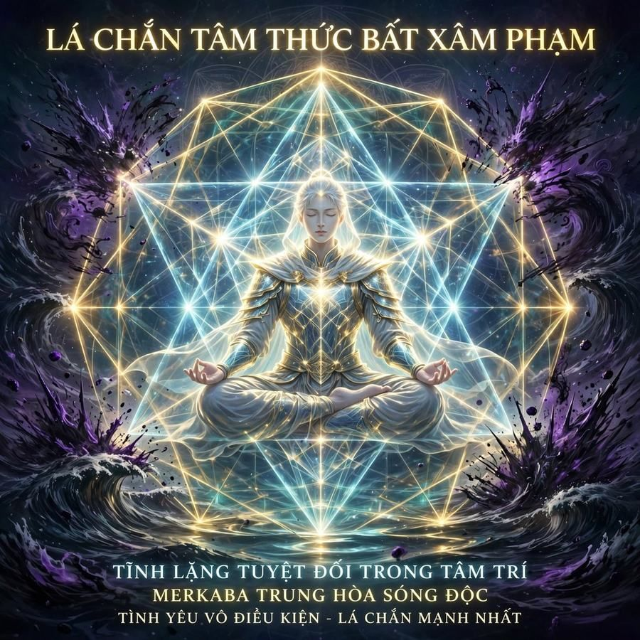
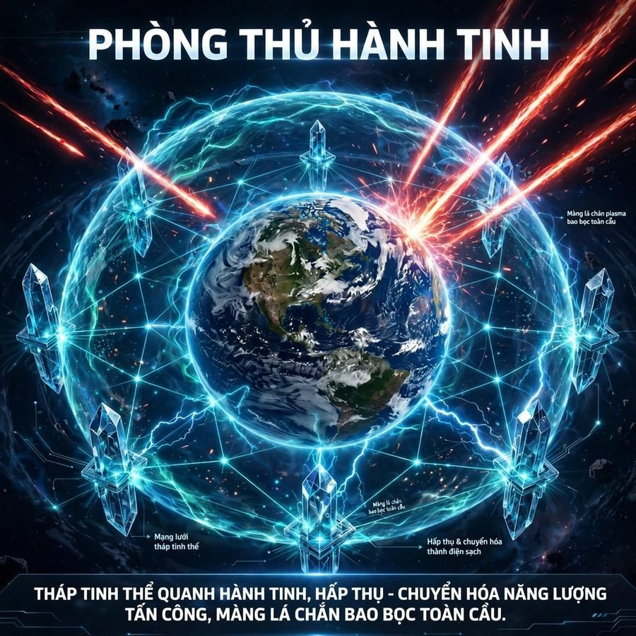

Trang chủ / Chuyên đề 8: Khoa Học & Công Nghệ / Kỳ 79
Chuyên đề 8 · Kỳ 79 / 100
VŨ KHÍ TẦN SỐ, PLASMA SIÊU CAO TẦN & VŨ KHÍ NĂNG LƯỢNG ĐỊNH HƯỚNG (DEW)

Bạn đã bao giờ tự hỏi: Làm thế nào các trận không chiến trong không gian giữa các phi thuyền ngoài hành tinh lại không hề để lại mảnh vỡ kim loại hỗn loạn hay khói độc mù mịt như các cuộc chiến trên Trái Đất? Tại sao có những luồng sáng chói lọi phát ra từ tàu không gian có thể làm vô hiệu hóa hoàn toàn hệ thống điện tử của kẻ thù trong một chớp mắt mà không gây ra bất kỳ vụ nổ vật lý nào, hay những chùm tia năng lượng có thể bốc hơi hoàn toàn một khối đá khổng lồ chỉ trong vài phần nghìn giây?
Trong tư duy chiến tranh cổ điển của thế giới 3D, con người thường trói buộc suy nghĩ vào các loại vũ khí động năng thô tháp: Đốt cháy thuốc súng để đẩy một đầu đạn kim loại va chạm vào mục tiêu, hoặc tạo ra các vụ nổ hóa học / phân hạch hạt nhân tàn phá môi trường xung quanh. Quy trình này sinh ra lượng rác thải vật lý khổng lồ, độc tố bức xạ kéo dài và sức tàn phá không kiểm soát.
Tuy nhiên, đối với các nền văn minh thiên hà tiên tiến, vũ khí không đơn thuần là công cụ tàn phá vật lý, mà là thiết bị điều biến Năng lượng, Plasma và Tần số Lượng tử (Directed Energy & Frequency Modulation)!
Bằng cách làm chủ Vũ khí Plasma Siêu cao tần, Vũ khí Năng lượng Định hướng (DEW), Sóng Siêu Tần Scalar và Vũ khí Tác động Trường Ý thức, họ có thể kiểm soát mục tiêu với độ chính xác tuyệt đối ở cấp độ nguyên tử, triệt hạ các mối đe dọa mà không làm tổn hại đến hệ sinh thái hay các sinh thể hòa bình xung quanh.
Hãy cùng bước vào thế giới khoa học tối thượng của thiên hà để giải mã trọn vẹn nguyên lý vận hành của Vũ khí Plasma, Vũ khí Năng lượng Định hướng DEW, Sóng Scalar, Vũ khí Tác động Sóng Não và Mạng lưới Phòng thủ Hành tinh!
✦ ✦ ✦1. BỐI CẢNH VÀ SỰ GIỚI HẠN CỦA VŨ KHÍ ĐẠN THÔ VÀ HẠT NHÂN 3D
Để hiểu được sự vượt trội của công nghệ năng lượng thiên hà, trước hết chúng ta cần nhìn lại những điểm yếu mang tính tử huyệt của các loại vũ khí thô sơ hiện nay trên Trái Đất.
A. Sự Bế tắc của Vũ khí Động năng và Thuốc súng 3D
- Phụ thuộc vào Khối lượng và Tốc độ bay Tuyến tính: Đạn kim loại hay tên lửa 3D phải chịu ảnh hưởng nặng nề bởi sức hút trọng lực, sức cản không khí và tốc độ di chuyển giới hạn. Khi chiến đấu trong môi trường vũ trụ không trọng lực với khoảng cách hàng ngàn kilômét, các loại đạn động năng trở nên chậm chạp và dễ dàng bị triệt tiêu hoặc né tránh.
- Tạo ra Rác thải và Mảnh vỡ Nguy hiểm: Các vụ nổ hóa học sinh ra hàng ngàn mảnh vỡ kim loại văng tự do trong không gian, tạo thành rác vũ trụ đe dọa chính các phi thuyền và trạm không gian của phe tấn công.
B. Sự Độc hại của Vũ khí Hạt nhân Phân hạch Thô
- Bức xạ Nhiễm độc Kéo dài: Vũ khí hạt nhân 3D tạo ra lượng chất phóng xạ độc hại làm ô nhiễm nguồn nước, đất đai và bầu khí quyển suốt hàng trăm năm.
- Tác động Hỗn loạn Không kiểm soát: Vụ nổ hạt nhân tàn phá tất cả mọi thứ xung quanh mà không thể phân biệt giữa mục tiêu quân sự và sự sống sinh học hòa bình.
C. Quan điểm Vật lý Thiên hà về Công nghệ Vũ khí
Khoa học thiên hà tiên tiến khẳng định những nguyên lý tối thượng:
- Mọi vật chất chỉ là Năng lượng cô đọng: Khi tác động trực tiếp một chùm năng lượng có dải tần số thích hợp vào liên kết nguyên tử của mục tiêu, ta có thể phân rã hoặc làm vô hiệu hóa mục tiêu đó mà không cần đến sự va chạm cơ học.
- Sự Tách biệt giữa Vật thể và Sinh mệnh: Vũ khí tiên tiến có khả năng "lọc tần số" — chỉ phá hủy cấu trúc kim loại / thiết bị điện tử của kẻ thù mà hoàn toàn giữ an toàn cho thể xác sinh học của các nạn nhân bị bắt giam bên trong!

2. CƠ CHẾ HOẠT ĐỘNG CỦA VŨ KHÍ PLASMA SIÊU CAO TẦN (PLASMA CANNONS & BLASTERS)
Plasma — trạng thái thứ 4 của vật chất (bên cạnh Rắn, Lỏng, Khí) — là nền tảng cấu tạo nên các dòng vũ khí năng lượng phổ biến nhất trên các phi thuyền liên sao.
A. Bản chất của Chùm Plasma Ion hóa Năng lượng Cao
- Trạng thái Khí lon hóa Siêu nóng: Khí (như Helium, Hydrogen hoặc Argon) được đưa vào buồng phản ứng của pháo plasma và được nạp một nguồn điện từ cực lớn từ Lò phản ứng Năng lượng Điểm Không (ZPE). Các electron bị bóc tách khỏi hạt nhân, biến dải khí thành một dòng plasma ion hóa mang năng lượng nhiệt và điện từ siêu cao.
- Định hình Chùm Plasma bằng Từ trường Xoáy (Magnetic Containment Field): Nếu chỉ phóng plasma ra ngoài, nó sẽ nhanh chóng bị tán xạ vào không gian. Do đó, pháo plasma tạo ra một "vỏ bọc từ trường hình xuyến" (Magnetic Toroidal Envelope) bao bọc trọn vẹn khối plasma.
B. Cơ chế Tàn phá tại Mục tiêu (Plasma Impact Process)
- Phóng Chùm Plasma với Tốc độ Quang học: Khối plasma được giữ trong vỏ bọc từ trường được bắn đi với tốc độ gần bằng tốc độ ánh sáng.
- Xuyên phá và Bốc hơi Vật chất: Khi chạm vào vỏ phi thuyền của kẻ thù, vỏ bọc từ trường vỡ ra, giải phóng nguồn năng lượng nhiệt hàng triệu độ C. Nhiệt lượng này không gây ra vụ nổ xé rách thô bạo mà bốc hơi tức thì lớp kim loại vật lý tại điểm tiếp xúc, biến mục tiêu thành các hạt bụi nguyên tử vi mô trong vài phần micro giây!
- Không để lại Mảnh vỡ: Nhờ cơ chế bốc hơi nguyên tử, trận chiến plasma không sinh ra các mảnh vỡ kim loại sắc nhọn văng tự do trong không gian.

3. VŨ KHÍ NĂNG LƯỢNG ĐỊNH HƯỚNG (DEW) & TIA LASER LƯỢNG TƯ ĐA QUANG PHỔ
Vũ khí Năng lượng Định hướng (Directed Energy Weapons - DEW) đại diện cho công nghệ tấn công và phòng thủ chính xác tuyệt đối ở cự ly xa.
A. Sự Khác biệt giữa DEW 3D Thô sơ và DEW Thiên hà Siêu Tần
- DEW 3D sơ khai: Các hệ thống laser quân sự Trái Đất hiện nay sử dụng chùm ánh sáng hội tụ nhiệt độ cao để đốt cháy mục tiêu. Tuy nhiên, chúng bị suy giảm năng lượng nặng nề khi đi qua sương mù, mưa hoặc bầu khí quyển đậm đặc, đồng thời tiêu tốn lượng điện năng khổng lồ.
- DEW Thiên hà Lượng tử: Sử dụng các chùm ánh sáng kết hợp với dải sóng Scalar (sóng dọc Etheric). Chùm tia năng lượng không bị khúc xạ, không bị suy giảm cường độ khi đi qua bầu khí quyển hay các trường từ trường hành tinh, và có thể bắn trúng mục tiêu ở cự ly hàng trăm ngàn kilômét chỉ trong vài phần nghìn giây.
B. Công nghệ "Cắt Tần số Tác động" (Frequency-Selective Targeting)
Đây là đỉnh cao khoa học của các thế lực hòa bình (như Liên đoàn Thế giới Thiên hà):
- Cắt dải Tần số Kim loại: Chùm tia DEW được điều biến dải tần số chỉ tương tác và làm tan chảy các hợp kim cấu tạo nên tàu chiến hay vũ khí của kẻ thù.
- Bảo vệ Sự sống Sinh học: Khi chùm tia DEW này đi xuyên qua phòng giam giữ nạn nhân bên trong phi thuyền địch, nó lướt qua cơ thể sinh học của con người mà không gây ra bất kỳ sự bỏng rát hay thương tổn nào, nhưng lập tức làm nổ tung các xiềng xắc kim loại và hệ thống khóa điện tử!

4. VŨ KHÍ SÓNG SIÊU TẦN SCALAR VÀ XUNG TỪ TRƯỜNG LIGHT-EMP
Trong các chiến dịch giải phóng các căn cứ ngầm hoặc căn cứ không gian bị chiếm đóng bởi các thế lực tiêu cực (như Tập đoàn Xám Nebu hay Bò sát Ciakahrr), các loại vũ khí tàn phá vật lý hoàn toàn bị cấm sử dụng. Thay vào đó, Vũ khí Sóng Scalar và Xung Từ trường Light-EMP được đưa vào vận hành.
A. Bản chất của Sóng Siêu Tần Scalar (Scalar Waves)
- Sóng Dọc Etheric Xuyên qua Mọi Vật chất: Sóng Scalar không phải là sóng điện từ ngang thông thường. Đó là loại sóng dọc dao động trực tiếp trong trường Ether.
- Không bị Cản bởi Giáp hay Đất đá: Sóng Scalar có thể đi xuyên qua hàng trăm kilômét đất đá, kim loại siêu dẫn hay các căn cứ DUMBs nằm sâu dưới lòng đất mà không bị giảm cường độ.
B. Vũ khí Xung Từ trường Light-EMP (High-Frequency EMP Pulse)
- Vô hiệu hóa Mạng lưới Trí tuệ Tổ ong AI (Hive-Mind Disruption): Nhánh người Xám tiêu cực (như Eban) vận hành hoàn toàn dựa trên việc kết nối thần kinh với Siêu máy tính Nữ hoàng Tổ ong AI. Vũ khí Light-EMP phát ra chùm xung điện từ sóng dừng siêu cao tần.
- Tê liệt Kẻ thù mà Không gây Tử vong: Chùm xung Light-EMP lập tức cắt đứt hoàn toàn liên kết sóng AI và làm đóng băng toàn bộ mạch điện tử của phi thuyền địch. Hàng vạn chiến binh người Xám lập tức rơi vào trạng thái tê liệt hoàn toàn như những cỗ máy bị ngắt điện, giúp lực lượng giải phóng dễ dàng bắt giữ và thu phục mà không cần nổ một viên đạn nào!

5. VŨ KHÍ TÁC ĐỘNG TRƯỜNG Ý THỨC VÀ KHÓA TẦN SỐ TÂM THỨC
Loại vũ khí nguy hiểm và tinh vi nhất trong lịch sử các cuộc chiến thiên hà chính là Vũ khí Tác động Trường Ý thức (Consciousness Disruption & Neural Mind-Lock Weapons).
A. Cơ chế Can thiệp Luân xa và Trường Khí chất
- Phát ra Dải Sóng Hỗn loạn (Harmonic Dissonance Waves): Vũ khí này chiếu ra các chùm sóng từ trường vi mô nhắm thẳng vào hệ thống luân xa (đặc biệt là Luân xa Tim và Luân xa Tuyến tùng) của đối phương.
- Làm Đứt gãy Liên kết Thể Phách và Thể Xác: Dải sóng hỗn loạn làm rung lắc trường hào quang (Aura), gây ra sự lệch pha tần số giữa thể tâm thức (Astral Body) và thể xác vật lý. Nạn nhân lập tức rơi vào trạng thái choáng váng, mất phương hướng, ngất xỉu hoặc mất đi khả năng tư duy logic trong một khoảng thời gian.
B. Lá chắn Tâm thức Bất xâm phạm của các Chiến binh Ánh sáng
- Thuật Tâm thức Dorm Dorhu: Để chống lại vũ khí tác động sóng não tiêu cực, các chiến binh tiến hóa cao được huấn luyện thực hành kỹ thuật duy trì sự tĩnh lặng tuyệt đối trong tâm trí.
- Lực lượng Từ bi Trung hòa Sóng Độc: Khi tâm trí đạt đến trạng thái Tình yêu Vô điều kiện và Định tĩnh tuyệt đối, trường Merkaba của chiến binh sẽ phát ra tần số cộng hưởng cực cao, trung hòa và phản xạ toàn bộ các chùm sóng thao túng tâm trí của kẻ thù ngược trở lại phía máy phát!

6. VŨ KHÍ PHÒNG THỦ HÀNH TINH: RÀO CHẮN TỪ TRƯỜNG VÀ THÁP PHẢN NỔ TINH THỂ
Bên cạnh các vũ khí tấn công trên phi thuyền, các hành tinh tự do trong thiên hà được bảo vệ bởi một hệ thống Công nghệ Phòng thủ Toàn cầu (Planetary Defense System) cực kỳ kiên cố.
A. Tháp Phản nổ Tinh thể (Crystalline Counter-Energy Towers)
- Mạng lưới Tháp Năng lượng Quanh Hành tinh: Các tháp năng lượng tinh thể khổng lồ được đặt tại các điểm nút địa từ (Ley Lines) của hành tinh.
- Cơ chế Hấp thụ và Phản nổ: Khi kẻ thù bắn các chùm tia năng lượng hay đạn plasma từ ngoài không gian xuống bề mặt hành tinh, mạng lưới tháp tinh thể sẽ lập tức phát ra một trường năng lượng hấp thụ. Nguồn năng lượng tấn công của kẻ thù bị hút trọn vẹn vào mạng lưới tinh thể, được chuyển hóa thành điện năng sạch và lưu trữ lại, hoặc phản xạ ngược trở lại hạm đội tấn công!
B. Màng Lá chắn Từ trường Hành tinh (Planetary Magnetic Shield)
- Bong bóng Bảo vệ Toàn cầu: Khi có nguy cơ xâm lược, hệ thống tháp phòng thủ kích hoạt một màng lá chắn plasma siêu cao tần bao bọc trọn vẹn toàn bộ bầu khí quyển hành tinh.
- Ngăn chặn Mọi Sự Xâm nhập Bất hợp pháp: Màng lá chắn này ngăn không cho bất kỳ phi thuyền tiêu cực nào có thể hạ cánh hay nhảy không gian trực tiếp vào bên trong bầu khí quyển hành tinh.

7. BÀI HỌC VÀ TẦM NHÌN HƯỚNG TỚI HÒA BÌNH THIÊN HÀ
Sự hiểu biết về Vũ khí Tần số, Plasma Siêu cao tần & Vũ khí Năng lượng Định hướng mang lại những bài học vô cùng sâu sắc cho sự phát triển của nhân loại Trái Đất:
- Chuyển đổi từ Tàn phá sang Kiểm soát và Hòa hợp: Sự tiến hóa của khoa học công nghệ không nằm ở việc tạo ra những vũ khí có sức tàn phá thô bạo hơn, mà nằm ở khả năng kiểm soát năng lượng chính xác, bảo vệ sự sống và triệt tiêu xung đột một cách hòa bình.
- Sức mạnh Tối thượng của Tâm thức: Mọi loại vũ khí năng lượng hay sóng từ trường dù mạnh mẽ đến đâu cũng phải khuất phục trước Tần số Nhận thức Siêu chiều và Tình yêu Vô điều kiện. Con người Trái Đất khi kích hoạt được sức mạnh tâm thức nội tại sẽ sở hữu lá chắn phòng thủ bền vững nhất trước mọi sự thao túng tiêu cực!